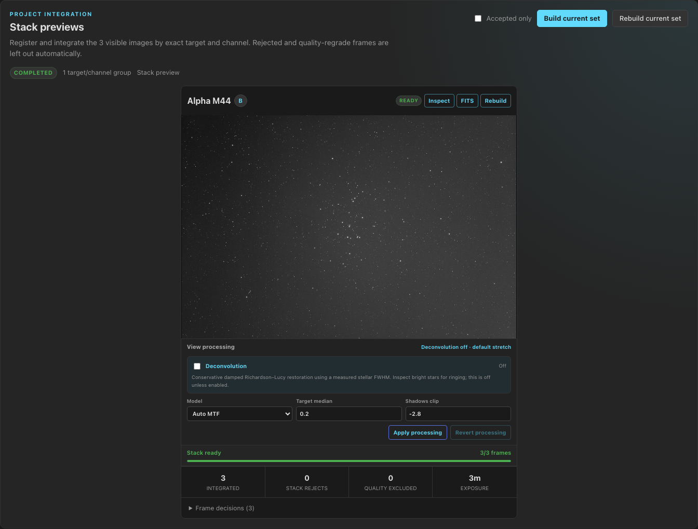
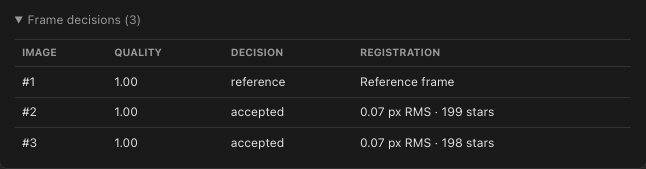
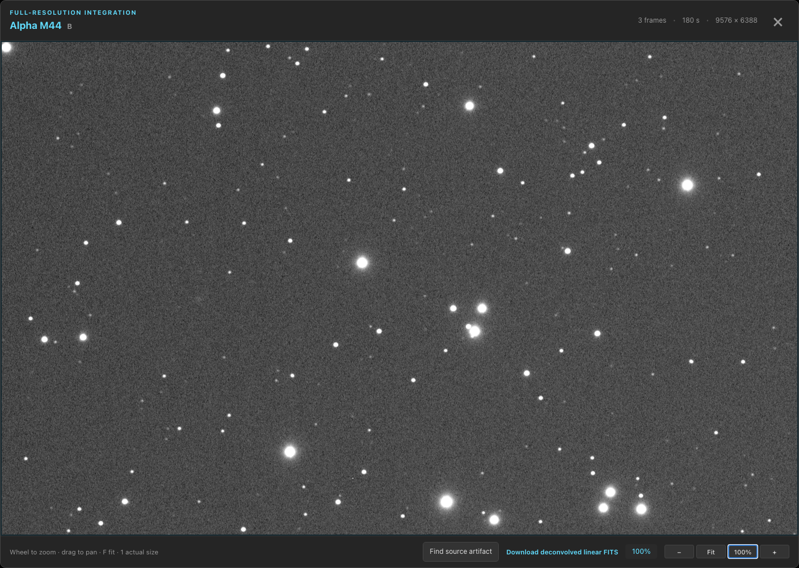
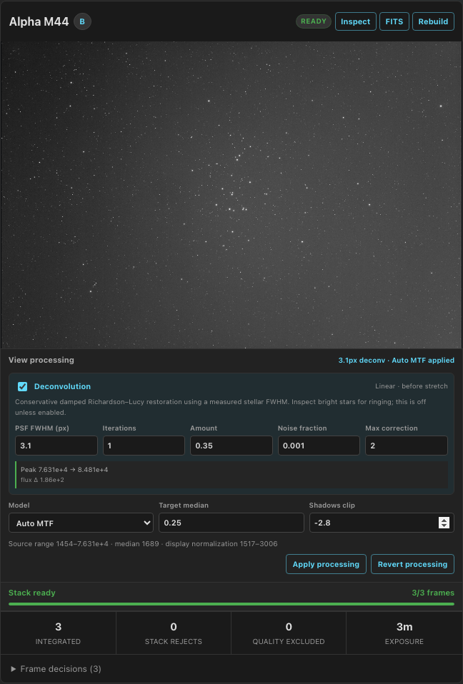
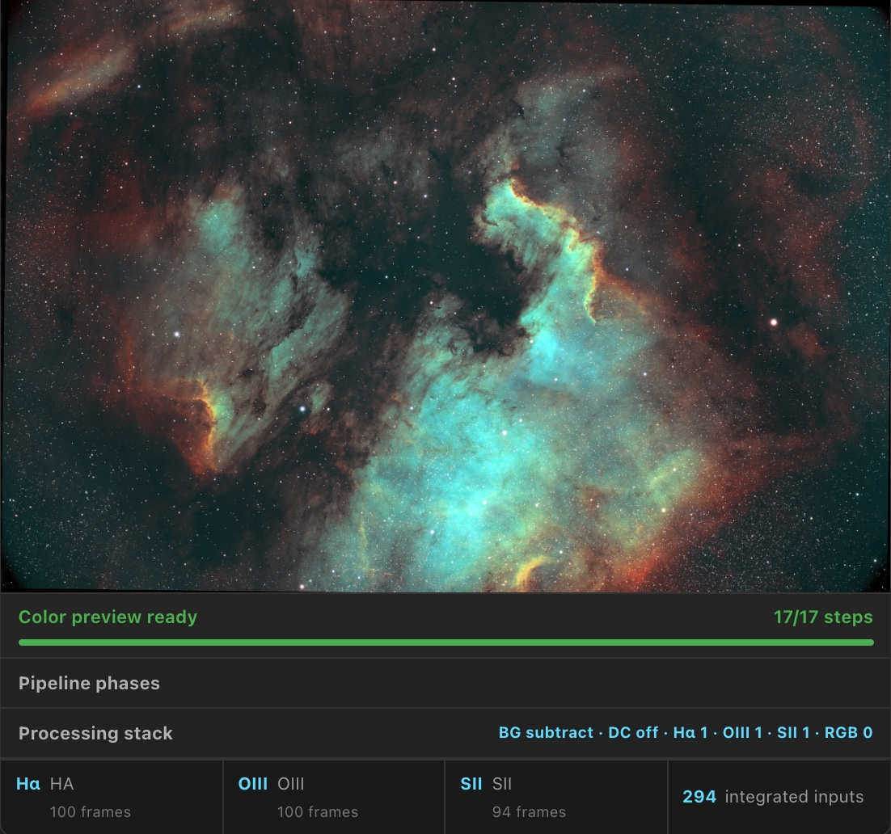
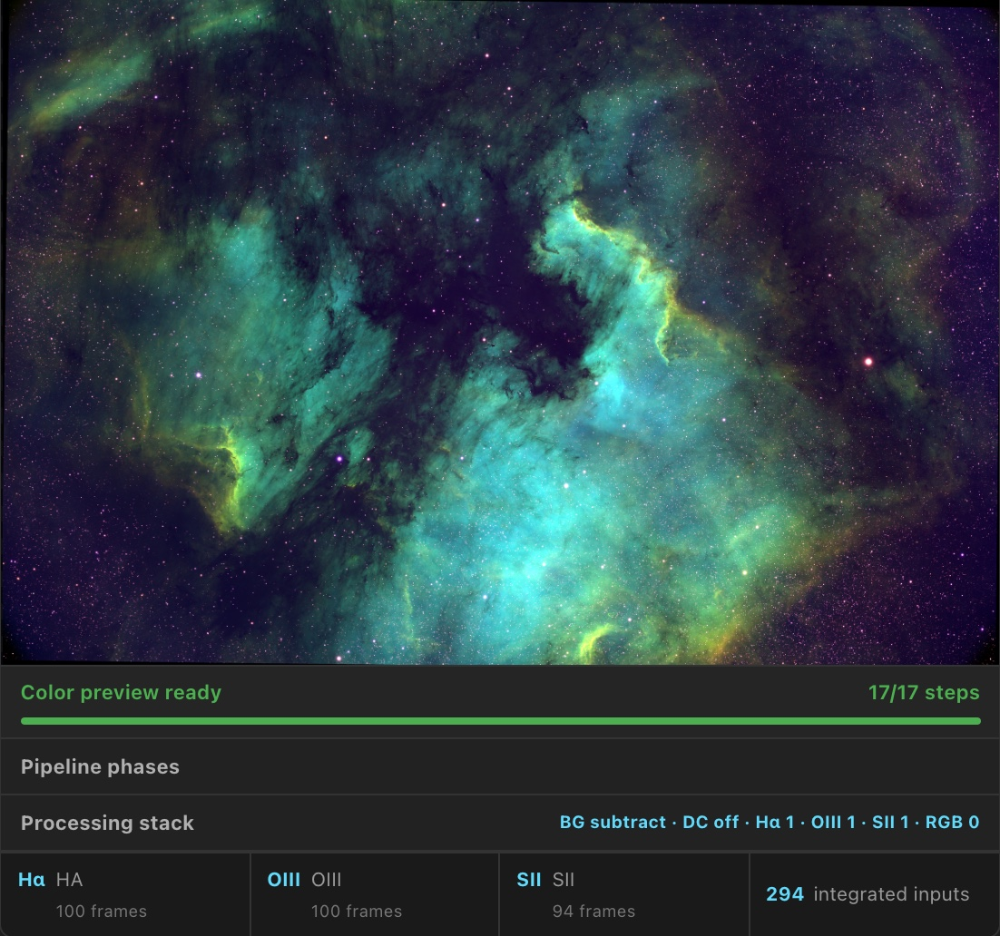
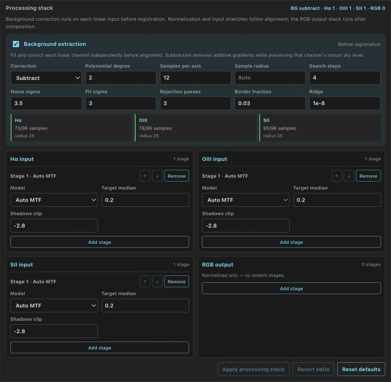

Stack Previews
Check an integration before committing hours to calibration: PSF Guard live-stacks the graded frames of a target right inside the grader — per channel, in color, and with the same quality decisions you just made.
Per-channel previews from graded frames
From a project's stack panel, PSF Guard integrates the selected or visible frames per exact target and filter with Seiza registration. The selection policy is the whole point: scheduler rejects and current sequence-analysis regrade recommendations are excluded before registration, so the preview shows what your accepted data actually stacks into. The latest successful result for each channel is kept durably in the cache; rebuilding one channel never discards its siblings.


Inspect at full resolution, stretch, download
The preview opens in the same inspector the grader uses — zoom, pan, fit, and one-pixel-per-pixel — and the display stretch is a parameterized Seiza stretch you can adjust or revert without recomputing the integration. The cached result stays linear: download it as FITS and drop it straight into your processing workflow.


Color composition: LRGB and narrowband palettes
When the required channel stacks exist, combine them without rebuilding the integrations. PSF Guard discovers unambiguous L/R/G/B and Ha/OIII/SII roles from the durable mono stacks, registers filters onto the luminance or H-alpha reference, and calls Seiza's color combiners. Available palettes are SHO, SOH, HSO, HOS, OSH, OHS, and HOO plus Foraxx-SHO and Foraxx-HOO; targets without SII automatically expose only the HOO variants.


Rebuilt source channels mark remembered color results stale without hiding them, so you always know when a combination no longer reflects the freshest channel data. Color outputs are cached with full provenance (source jobs, palette, policy, Seiza revision) as screen and native PNG plus an RGB 32-bit-float FITS whose header records the palette and linear-versus-display transfer semantics.
Background extraction and processing controls
Color previews fit and subtract each input channel's background before cross-filter registration, using Seiza background extraction with per-channel fit diagnostics. The editable processing stack exposes additive or multiplicative correction controls and ordered per-input and output stretch stacks — with complete phase progress while a job runs.

Opt-in deconvolution
Stack previews can apply Seiza deconvolution as an opt-in processing step, sharpening the preview without touching the cached linear integration. Like the display stretch, it is a reversible view decision — toggle it, compare, and download either representation.
Take the data out for real stacking
When the preview convinces you the data is worth a full run, export the non-rejected lights straight into your stacking pipeline. Rejects are never exported; ungraded frames are opt-in.
- Desktop app: the Export action on any project or target opens a folder picker and places files locally — hardlinks when the destination is on the same filesystem (instant, no extra disk), copies otherwise.
- Browser: the same action downloads a streaming, store-mode zip.
- CLI:
psf-guard export <db> --dest ./stacking [--include-pending] [--link].
All three produce the same WBPP-style layout —
<target>/LIGHT/<filter>/ — that PixInsight WBPP and
Siril group automatically, and re-runs only add new subs, so an export
folder can be topped up after every session.